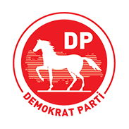

<!doctype html>
<html lang="tr">
<head>
    <meta charset="UTF-8">
    <meta name="viewport" content="width=device-width, user-scalable=no, initial-scale=1.0, maximum-scale=1.0, minimum-scale=1.0">
    <meta http-equiv="X-UA-Compatible" content="ie=edge">
    <title>Demokrat Parti</title>
    <link rel="stylesheet" href="assets/css/bootstrap.min.css">
    <link rel="stylesheet" href="assets/css/style.css">
    <!-- sadece genel-baskan sayfası için start -->
    <link rel="stylesheet" href="assets/css/ozgecmis.css">
    <!-- sadece genel-baskan sayfası için and -->
    <link rel="stylesheet" href="assets/css/media.css">
    <link rel="stylesheet" href="assets/css/newstyle.css">
    <link rel="stylesheet" href="https://cdnjs.cloudflare.com/ajax/libs/font-awesome/5.15.2/css/all.min.css">
</head>
<body>
    <!-- header start -->
<header>
    <!-- Navigation -->
    <nav class="navbar navbar-expand-lg navbar-light">
        <div class="container nav-container">
            <!-- Logo -->
            <a href="#" class="navbar-brand">
                
            </a>
            <!-- End Logo -->
            <!-- Mobile Toggler Button -->    
           
            <!-- End Toggler Button -->
            <!-- Collapse Navbar -->
            <div class="collapse navbar-collapse" id="mainNav">
                <div class="before"></div>
                <div class="after"></div>
                <ul class="navbar-nav ml-auto">
                    <li class="nav-item dropdown">
                        <a class="nav-link dropdown-toggle" href="#" id="navbarDropdown" role="button" data-bs-toggle="dropdown" aria-expanded="false">
                            PARTİ
                        </a>
                        <ul class="dropdown-menu" aria-labelledby="navbarDropdown">
                            <li><a class="dropdown-item" href="#">HAKKIMIZDA</a></li>
                        </ul>
                    </li>
                    <li class="nav-item">
                        <a href="#" class="nav-link">HABERLER</a>
                    </li>
                    <li class="nav-item dropdown">
                        <a class="nav-link dropdown-toggle" href="#" id="navbarDropdown" role="button" data-bs-toggle="dropdown" aria-expanded="false">
                            DP KADRO
                        </a>
                        <ul class="dropdown-menu" aria-labelledby="navbarDropdown">
                            <li><a class="dropdown-item" href="#">KADROMUZ</a></li>
                        </ul>
                    </li>
                    <li class="nav-item dropdown">
                        <a class="nav-link dropdown-toggle" href="#" id="navbarDropdown" role="button" data-bs-toggle="dropdown" aria-expanded="false">
                            İLLER
                        </a>
                        <ul class="dropdown-menu" aria-labelledby="navbarDropdown">
                            <li><a class="dropdown-item" href="#">ANKARA</a></li>
                        </ul>
                    </li>
                    <li class="nav-item">
                        <a href="#" class="nav-link">BİZE ULAŞIN</a>
                    </li>
                </ul>
            </div>
            <!-- End Collapse Navbar -->
            <!--start mobile menu-->
            <div class="mobile">
                <div class="btn">
                    <i class="fa fa-bars"></i>
                    <i class="fa fa-times"></i>
                </div>
                <ul class="open">
                    
                    <li>
                        <a href="#">Parti</a>
                        <ul>
                            <li><a href="#">hakkımızda</a></li>
                            <li><a href="#">kategori1</a></li>
                        </ul>
                    </li>
                    <li>
                        <a href="#">Haberler</a>
                    </li>
                    <li>
                        <a href="#">Dp kadro</a>
                        <ul>
                            <li><a href="#">hakkımızda</a></li>
                            <li><a href="#">kategori1</a></li>
                        </ul>
                    </li>
                    <li>
                        <a href="#">İller</a>
                        <ul>
                            <li><a href="#">hakkımızda</a></li>
                            <li><a href="#">kategori1</a></li>
                        </ul>
                    </li>
                    <li><a href="#">Bize Ulaşın</a></li>
                </ul>
            </div>
        </div>
    </nav>
    <div class="header-inline">
        <!-- for line -->
    </div>
    <!-- End Navigation -->
</header>
<!-- header end -->
<!-- section start -->
<section>
    <div class="container main-section">
        <div class="section-one">
            <div class="top">
                <div class="last">
                    
                    <h3>Gültekin Uysal</h3>
                    <p>Özgeçmiş</p>
                </div>
            </div>
            <div class="middle">
               <div class="last">
                
                <p>sosyal medya</p>
                <div class="icons">
                    <a href="#"><i class="fab fa-facebook"></i></a>
                    <a href="#"><i class="fab fa-twitter"></i></a>
                </div>
               </div>
            </div>
            <div class="bottom">
                    
            </div>
        </div>
        <div class="section-two">
            <p>1976 yılında Afyonkarahisar’da doğdu. İlkokulu Afyonkarahisar Gedik Ahmet Paşa İlköğretim Okulunda, Ortaöğrenimini ise İstanbul Özel 
                Üsküdar Fazilet Erkek Lisesinde tamamladı. <br> <br>
                
                Üniversite eğitimini Gazi Üniversitesi Bilkent Üniversitesi Kamu Yönetimi ve Siyasal Bilgiler Fakültesinde Siyaset Bilimi bölümünde 
                bölümünde tamamlamıştır. Eğitimi sırasında Erasmus kapsamında Houston'da 2 yıl dil eğitimi almıştır.
                <br> <br>
                2003-2005 yılları arasında DYP Afyonkarahisar İl Başkanı olarak görev yaptı. Mayıs 2005’te yapılan DYP Büyük Kongresi’nde Genel İdare Kurulu Üyeliğine seçildi. Aynı dönemde, Gençlikten Sorumlu Genel Başkan Yardımcılığı görevinde bulundu. 2007 yılı seçimlerinde 
                Afyonkarahisar’dan Milletvekili adayı oldu.[1] 16 Mayıs 2009 tarihinde yapılan Demokrat Parti 5. Olağanüstü Büyük Kongresi ile 
                14 Ocak 2011 yılında yapılan Demokrat Parti 10. Olağan Büyük Kongresinde Genel İdare Kurul Üyeliğine seçildi ve Yerel Yönetimlerden 
                Sorumlu Genel Başkan Yardımcılığı görevinde bulundu.
                <br> <br>
                 6 Mayıs 2012 tarihinde yapılan, Demokrat Parti 8. Olağanüstü Büyük Kongresi'nde Demokrat Parti Genel Başkanlığına seçildi.[2] İş 
                Hayatını Aile Şirketi Reisoğlu Mermer’de sürdürdü. 
                <br> <br>
                Türk Ocağı Afyonkarahisar Şubesi, Liberal Düşünce Topluluğu, Afyon Eğitim Vakfı, Yörük-Türkmen Federasyonları gibi kuruluşlarda 
                kurucu, üye ve yönetici olarak görev yaptı. 
                <br> <br>
                “Türkiye Günlüğü” ve “Piyasa” dergilerinde çevirileri yayınlanmıştır.</p>
        </div>
    </div>
</section>

<!-- footer -->
<footer>
    <div class="footer-card">
    <div class="container">
        <div class="footer-inline row">
            <div class="left col-md-4">
                <div class="logo"></div>
                <div class="follow"><p>Bizi Takip Edin</p></div>
                <div class="icons">
                <a href="#"><i class="fab fa-facebook"></i></a>
                <a href="#"><i class="fab fa-twitter"></i></a>
                <a href="#"><i class="fab fa-youtube"></i></a>
            </div>
                <div class="copy"><p>@2021 Demokrat Parti</p> <p>Tüm Hakları Saklıdır.</p></div>
            </div>
            <div class="center col-md-4">
                <div class="center-inline">
                    <h2>TEMEL METİNLER</h2>
                    <ul>
                        <a href="#"><li>Parti Tüzüğü</li></a>
                        <a href="#"><li>Parti Programı</li></a>
                        <a href="#"><li>Kurumsal Kimlik</li></a>
                    </ul>
                    <ul>
                    <h2>BİRİMLER</h2>
                        <a href="#"><li>Genel Başkan</li></a>
                        <a href="#"><li>Genel Merkez Yönetim Kurulu</li></a>
                        <a href="#"><li>Merkez Disiplin Kurulu</li></a>
                    </ul>
                    <ul>
                    <h2>HABERLER</h2>
                        <a href="#"><li>Genel Başkan Haberleri</li></a>
                        <a href="#"><li>Tüm Haberler</li></a>
                        <a href="#"><li>Gündem</li></a>
                    </ul>
            </div>
            </div>
            <div class="right col-md-4">
                <div class="right-inline">
                    <h2>GENEL MERKEZ</h2>
                    <ul>
                        <li>Dr.Sadık Ahmet Cad. No:3,06520</li>
                        <li>Çankaya/Ankara,Türkiye</li>
                    </ul>
                    <ul>
                    <h2>İLETİŞİM</h2>
                        <li>Genel Merkez İletişim</li>
                        <li>(0312)248 86 00</li>
                    </ul>
                    <ul>
                    <h2>Fax</h2>
                        <li>(0312)248 86 00</li>
                    </ul>
            </div>
            </div>
        </div>
    </div>
    </div>
</footer>
<!-- footer end -->


<script src="assets/js/jquery-3.5.1.min.js"></script>
<script src="assets/js/bootstrap.bundle.js"></script>
<script src="assets/js/owl.carousel.min.js"></script>
<script src="assets/js/app.js"></script>
</body>
</html>